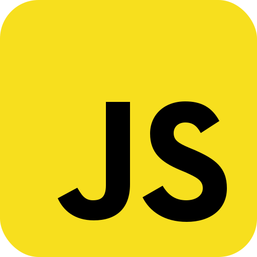

You've reached my projects page!
Here you can find some of the projects I've worked on, both for school and personal projects. Most of these projects are web based, as that is what I spend most of my time on. However in the future I hope to add some other projects that are not web based. They are not listed in any particular order
I am in the process of rewriting all descriptions for the projects.
GooberOS
The source code A web-based terminal emulator that mimics a Linux shell environment. It allows users to execute basic commands, navigate directories, and manage files in a simulated file system. The project is built using HTML, CSS, and JavaScript. It was made during a 48-hour make-a-thon event organized by my school. I participated with a team of 4 other students. My sister Jea, along with two of my classmates, Stone and Rianne, and my sister's classmate Tigo, worked together on this project. It was an overwhelming success, we won against two other first-year teams and received a small prize. The experience was a lot of fun, and I learned a great deal about teamwork and web development.
TappsBox
The source code
[archived project, no longer maintained]
A simple simple python script that automates the process of clicking on boxes in the evolution games from
Tapps Games. It was originally developed for Cow Evolution, but should work work with every evolution game
from Tapps Games. Provided you make your own screenshots. It uses PyAutoGUI to find the boxes and then move to
them and clicks on them.
Personal Website
The source codeThis very website you are looking at right now! I made this website to showcase my projects and to have a personal space on the internet. The website is built using plain ol' HTML, CSS and a bit of JavaScript. If I have correctly counted, this is the 12th version of the little website. Fact: the first commit was on Feb 13, 2023. I have learned a lot about coding in the past years (it's 2025 now).
Colorcat (cli) | Small contribution
The source codeA simple python script to print colored and styled text from a file to your terminal! The author (my sister) originally created this because she wanted to show their todo list in a more visually appealing way when they opened their terminal, however now it can be used for any text file. I made a small contribution to the project by adding support to print each line with a slight delay (configurable in the file or via a command line flag) [-d [delay in milliseconds]]
Comment Finder
The source codeComment Finder is a browser extension made for FireFox. The extension finds HTML, CSS and JavaScript comments on any webpage. Originally it was made by DimdenGD for Chrome to find just HTML comments however my sister ported it to FireFox and after a while I decided to figure out how to add functionality to make it find CSS and JavaScript comments as well.